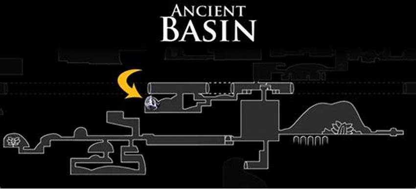
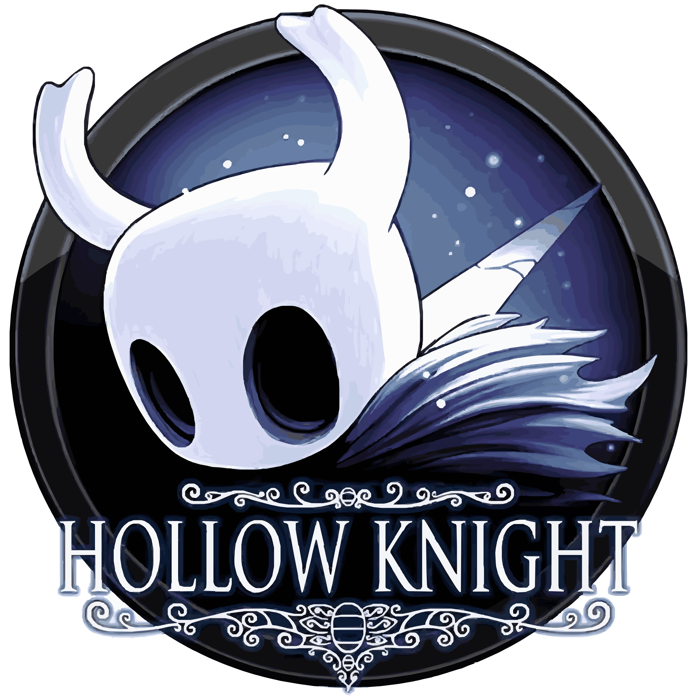

O que são os minerios palidos
O Minério Pálido é um metal pálido e raro que emana um ar frio. É valorizado por aqueles que criam armas. O Minério Pálido é um item coletável encontrado em vários lugares de Hallownest. Dar Minério Pálido ao Forjador de Ferrões junto com um pagamento de Geo permite que ele aprimore o Ferrão do Cavaleiro

Onde encontrar os Minerios Palidos
Existem seis Minérios Pálidos para serem encontrados no total: Encontrado na Bacia Antiga, à esquerda da estação de bonde e da entrada principal da Bacia Antiga. Derrote dois Mawleks Menores que o protegem. Encontrado na Coroa de Hallownest, no topo do Pico de Cristal, embutido no pedestal de uma estátua da Radiância. Requer Asas do Monarca. Encontrado em um lugar secreto do Ninho Profundo, acessível ao quebrar a parede da sala à esquerda da Fonte Termal. Requer derrotar o Nosk. Dado pelo Pailarva. Requer Resgatar 31 Larvas. Dado pela Vidente. Requer coletar 300 Essências com o Ferrão dos Sonhos. Recompensa do Coliseu dos Tolos. Completar a Provação do Conquistador. Para fazer Upgrade no Ferrão: O primeiro upgrade: 250 Geo. O segundo: 800 Geo e 1 Minério Pálido. O terceiro: 2.000 Geo e 2 Minério Pálido. O quarto: 4.000 Geo e 3 Minério Pálido

localização minerio palido bacia antiga
Fato curioso sobre Hollow Knight
Você sabia que o personagem principal de Hollow Knight foi retirado de um projeto anterior da Team Cherry chamado Hungry Knight, que foi realizado em menos de 48 horas em um encontro de desenvolvedores? Isso é um exemplo interessante de como as ideias podem evoluir e se transformar ao longo do tempo! 😊
No desenvolvimento de Hollow Knight, as inspirações da Team Cherry foram jogos como zelda II,Super metroid e Castlevania: Aria of Sorrow, e você tambem sabia que O modelo de movimento em Hollow Knight veio das séries Mega Man e Mega Man X.
Top runners
em primeiro 1°lugar skate king com 31m 24s de LRT(load removed time)
video no qual ele alcançou 1°lugar
Caso queira ver diretamente no Youtubeclique aqui
já em 2°lugar temos lep com 31m 39s de LRT
video no qual ele alcançou 2°lugar
e por ultimo mas não menos importante temos jackmanmarcus com 31m 46s de LRT
video no qual ele alcançou 3°lugar
Caso queira ver diretamente no Youtubeclique aqui

Notificação Agora